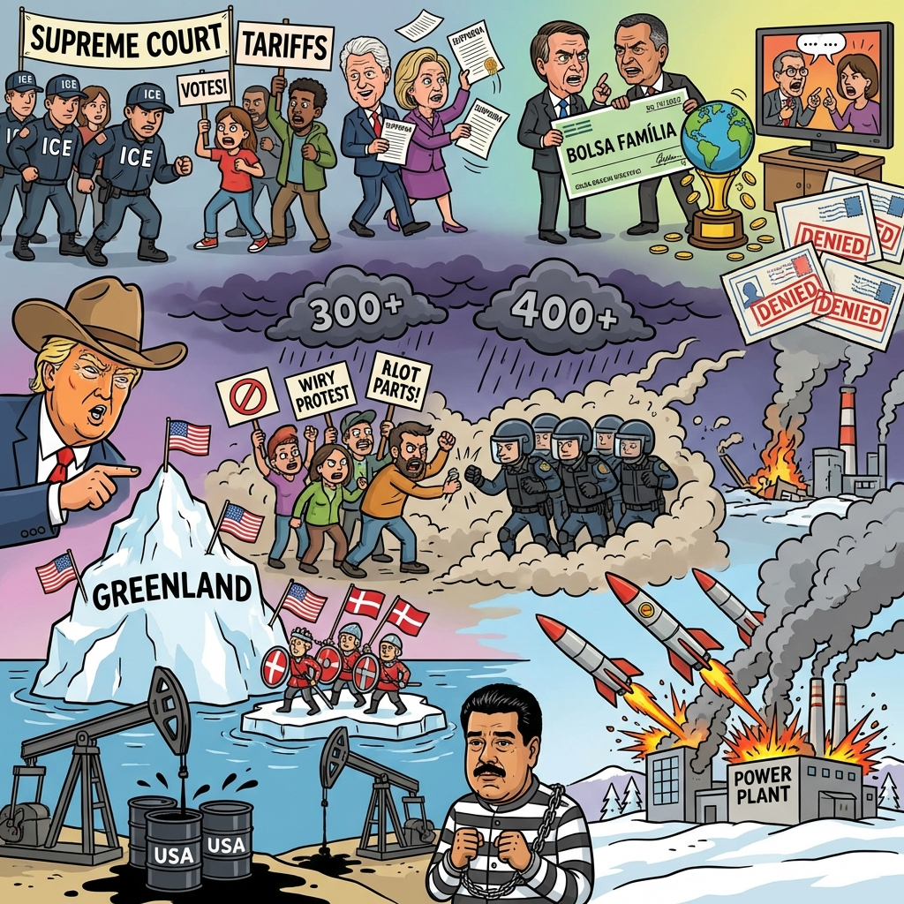

The Daily Globe: Iran Protests: Over 2,500 Dead in Regime Crackdown, ICE Officer Shoots U.S. Citizen in Minneapolis, and Tarcísio's Wife Calls Him 'CEO of Brazil'
Published on 2026-01-15

World
- Iran Protests: Over 2,500 Dead in Regime Crackdown
Brutal government response to anti-regime protests amid economic collapse; Trump threatens strikes if executions occur, raising fears of wider Middle East conflict.
- Trump Pushes U.S. Control Over Greenland
President Trump claims Greenland needed for national security against Russia/China; Denmark and EU reject, prompting military buildups and sovereignty debates.
- U.S. Captures Maduro, Secures Venezuelan Oil
Post-raid oil deals worth billions ignite accusations of resource colonialism; political prisoners released amid divided U.S. opinion.
- Russia Escalates Winter Attacks on Ukraine
Massive drone/missile strikes on energy infrastructure kill civilians, leave millions without power; condemned as war crime.
USA
- ICE Officer Shoots U.S. Citizen in Minneapolis
Protests erupt over 'self-defense' shooting during raids; prosecutors resign, polls show communities feel less safe.
- Supreme Court Hears Trump Reciprocal Tariffs Case
Potential ruling could protect jobs or disrupt economy; Trump warns of dire consequences if lost.
- Trump Flips Off Heckler at Ford Plant
Worker suspended after 'pedophile protector' shout; highlights manufacturing boom but draws 'unpresidential' criticism.
- Clinton Subpoenas in Epstein Probe
Bill and Hillary refuse to testify; tied to broader Trump-era scandals.
Brazil
- Tarcísio's Wife Calls Him 'CEO of Brazil'
Chris Tonietto sparks right-wing rift; Bolsonaro allies demand support for Flávio amid 2026 race speculation.
- BBB Contestant Ignites Bolsa Família Debate
Solange Couto claims benefits encourage teen pregnancies; government clarifies 75% school attendance rule.
- US Suspends Immigration Visas for Brazilians
Part of 75-country list citing security/backlogs; outrage over migration/tourism impacts.
- Taxpayer-Funded Film Wins Golden Globe
'O Agente Secreto' received R$7.5M public funds; reignites culture spending debates.
Topic Index
- iran-uprising
- greenland-crisis
- venezuela-oil-grab
- ukraine-energy-attacks
- ice-immigration-protests
- trump-tariffs-scotus
- epstein-clinton-subpoenas
- tarcisio-ceo-brazil